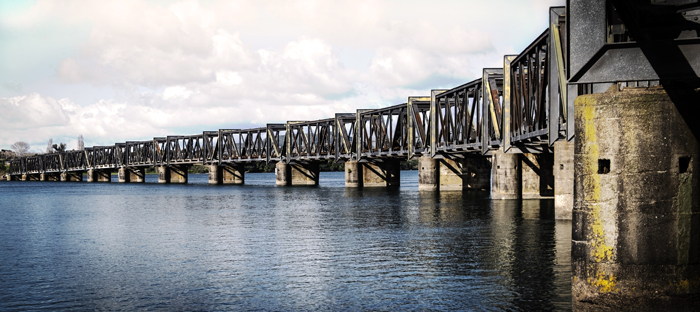

Tauranga Harbour Bridge
Tauranga Tourist Location
A Gateway Across Tauranga Harbour!
The Tauranga Harbour Bridge is an important landmark that
connects Tauranga with the western side of the harbour.
The bridge provides an impressive view across the water
and is an important part of the city's transport network.
The surrounding harbour is a great place for visitors to
enjoy Tauranga's coastal scenery. Visitors can explore
nearby waterfront areas, take photographs of the bridge
and harbour, and enjoy views of boats travelling across
the water. The area is particularly appealing to visitors
interested in photography, sightseeing, and Tauranga's
coastal environment.
Visiting the area around the bridge can be a low-cost
activity for travellers. There is no admission fee to
view the bridge, although visitors should consider
transport and food costs. Nearby Tauranga attractions
can also be included in a larger day of sightseeing.
Facts:
- Located in Tauranga
- Crosses Tauranga Harbour
- Important connection between parts of Tauranga
- Offers views across the harbour
- Surrounded by coastal scenery
- Popular location for photography
- Free to view
- Close to other Tauranga attractions
Costs:
- Viewing the bridge: Free
- Exploring nearby waterfront areas: Free
- Estimated food costs: $10-$30 per person
- Estimated transport costs: $5-$20
- Estimated parking costs: $0-$10
- Estimated total visit cost: $15-$60 per person